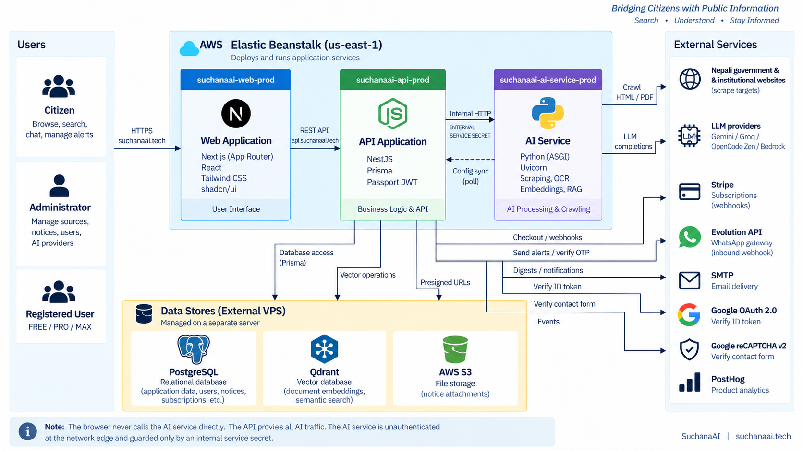
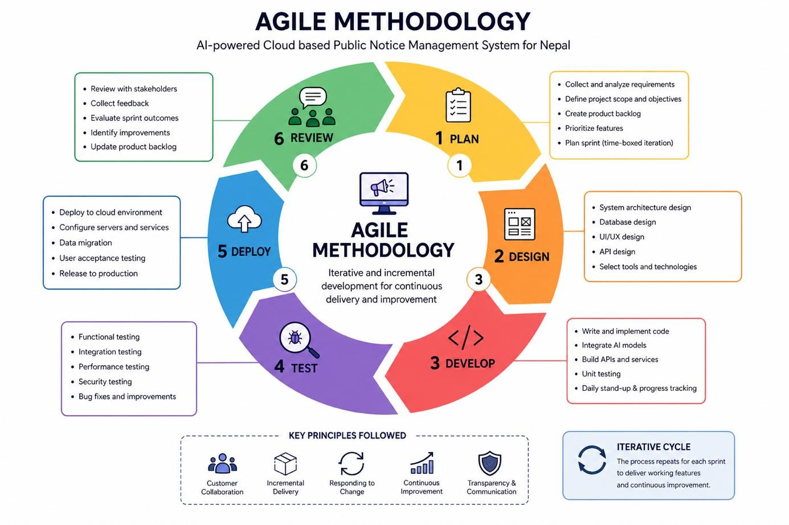
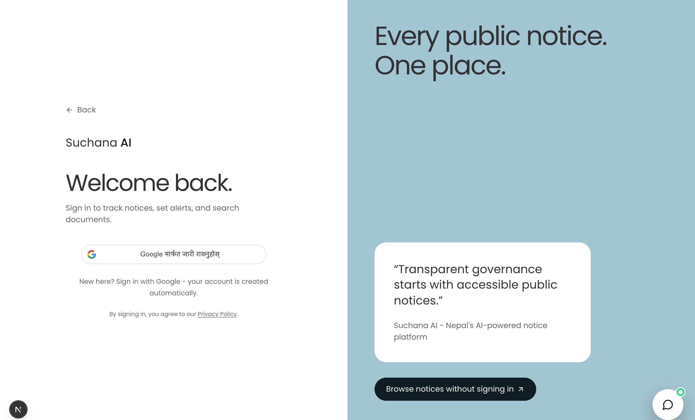
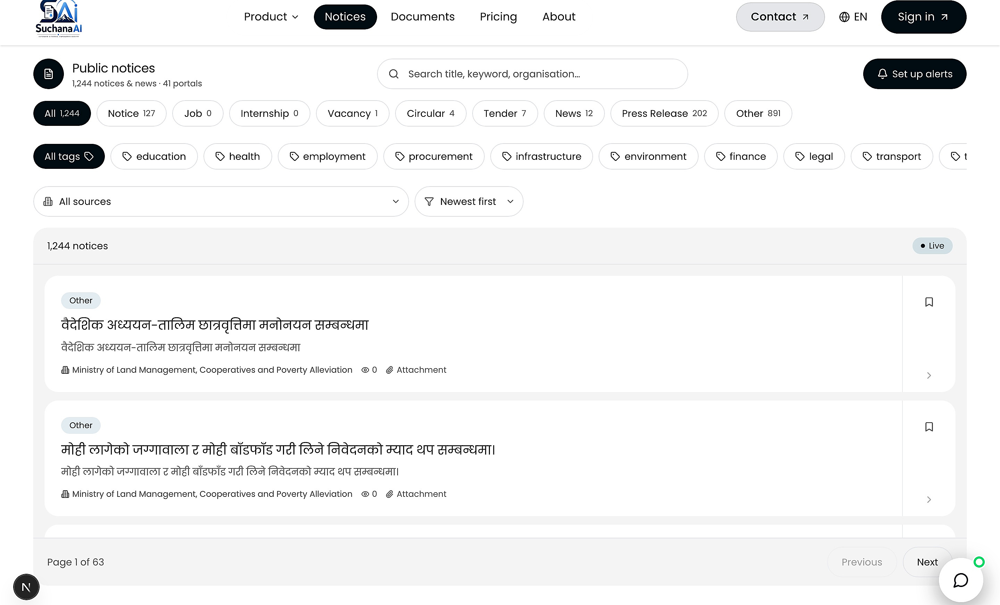
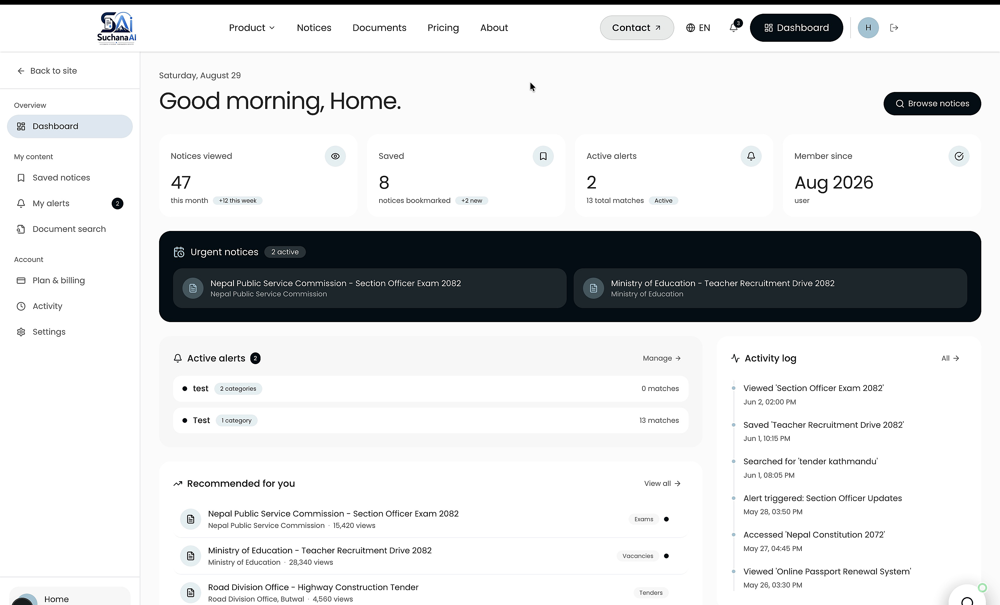
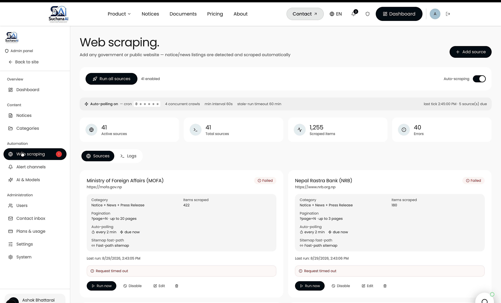

Introduction & Aim
SuchanaAI is a cloud-based platform that consolidates public notices from Nepalese government and institutional portals into one responsive interface. It combines automated ingestion, structured search, AI summaries and document-grounded question answering.
Aim: automate the collection, categorisation, summarisation and intelligent delivery of public notices so citizens can find and understand official information more easily.
Problem Statement
- Official notices are fragmented across many independent portals with inconsistent structures and update patterns.
- Scanned PDFs and image-based notices are often not machine-searchable, creating extra effort and accessibility barriers.
- Citizens repeatedly visit multiple sites to track vacancies, exams, tenders and policy updates.
- There is no single interface combining aggregation, search, alerts, AI summaries and document-based Q&A.;
System Architecture

Objectives
- 1. Analyse current publication practices, extraction challenges and citizen access barriers.
- 2. Build automated collection, extraction, normalisation and storage for multiple Nepalese notice sources.
- 3. Integrate AI classification, plain-language summaries and retrieval-augmented question answering.
- 4. Develop, deploy and evaluate a cloud-hosted web application with unified search, filters, browsing and alerts.
System / Product Features
- Unified notice aggregation and category/source/date filtering
- AI-generated plain-language summaries
- Natural-language RAG search with grounded source results
- Saved notices, alert rules and user dashboards
- Admin source health, scraping control and notice management
- Role-based authentication plus email / WhatsApp notification channels
Methodology - Agile

Iterative cycle: Plan → Design → Develop → Test → Deploy → Review.
The Agile approach supports continuous feedback across scraping, AI, backend and frontend work. Testing is performed throughout each increment so changes can be refined without restarting the full development process.
SDG Goal 9
Project alignment
SuchanaAI applies cloud infrastructure, AI-assisted information processing and a scalable digital platform to improve how Nepalese public notices are collected, organised and accessed.
Measurable contribution
- Digital public-information infrastructure
- Innovation in notice discovery and understanding
- More efficient, inclusive access to civic information
Technology Stack
System Output - Implemented Interface




Testing & Evaluation
Functional verification
- Registration, authentication, browse, filter and save workflows passed.
- Scraping parsing, malformed-source handling and record access were verified.
- RAG retrieval returned document-grounded results with controlled access.
User & operational validation
- Five target users completed eight scripted scenarios covering core journeys.
- Feedback improved filter wording, guidance and empty-state presentation.
- Responsive rendering, health checks, schedules and rollback behaviour passed.
Conclusion
SuchanaAI delivers a coherent cloud platform that links notice ingestion, AI-assisted understanding, search, RAG and administrative control in one system. The implemented modules are traceable to design artefacts and test evidence, with stable retrieval and usable end-to-end workflows.
Outcomes: a unified searchable notice repository, AI-assisted understanding, grounded RAG answers, user alerts and an administrator control surface.
Key limitations: scraper selectors require maintenance when source portals change, and OCR quality can limit retrieval from scanned documents containing mixed Nepali and English text.
Project Impact & Future Scope
SuchanaAI strengthens access to public information through unified notice aggregation, intelligent search and document-grounded AI.
Expected impact
- Reduces repeated visits to fragmented public-sector portals.
- Improves discovery through categories, filters and semantic search.
- Supports understanding with summaries and grounded RAG answers.
- Enables timely action through saved notices and alerts.
Future scope
- Expand national, provincial and local-government source coverage.
- Improve mixed Nepali-English OCR and summary evaluation.
- Add mobile-first delivery and broader accessibility support.
- Strengthen selector repair, monitoring, privacy and reliability.